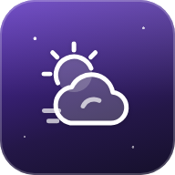

Erlaube den Standort, dann siehst du hier das Wetter, die Sonne und den Mond über dir.
Regenwahrscheinlichkeit, nächste Stunden
Meldet Regen, solange HimmelsWahr geöffnet ist.
Wetterdaten von Open-Meteo.com (CC BY 4.0), aufbereitet und umgerechnet
Die nächsten 5 Tage · antippen für Details